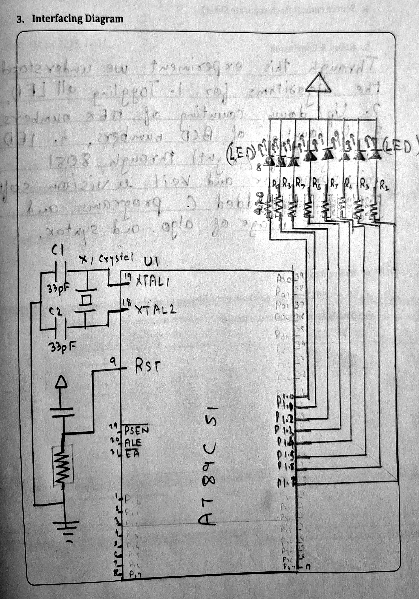
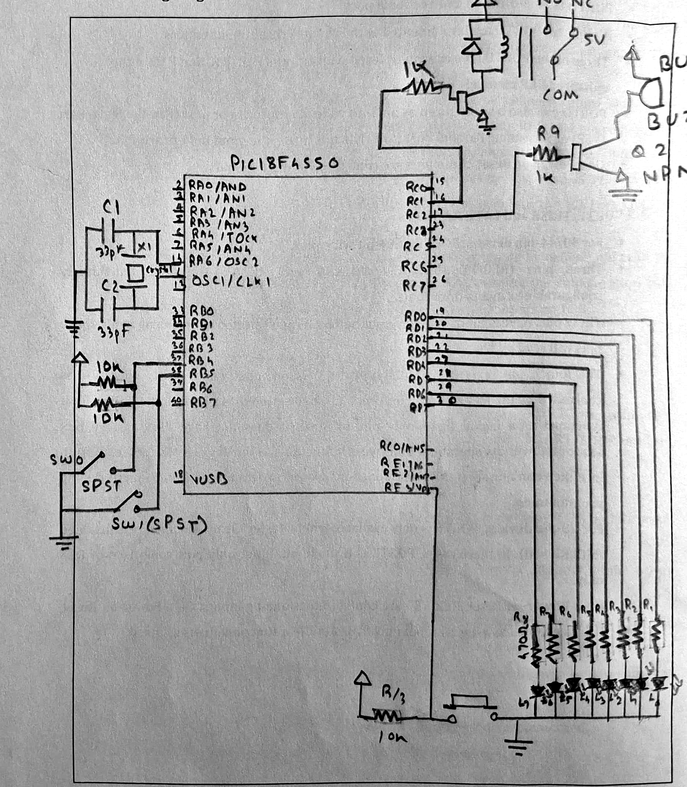
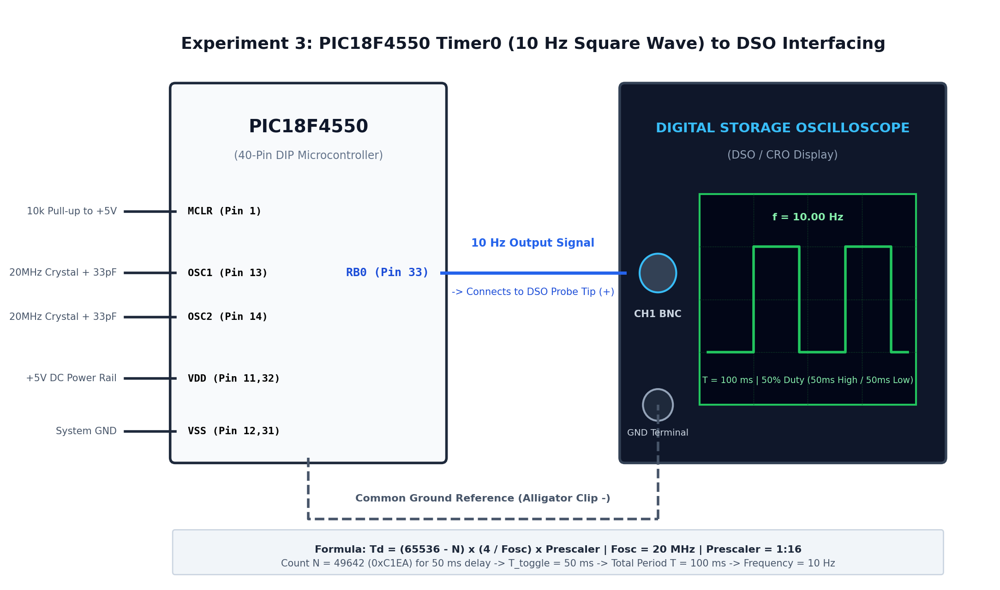
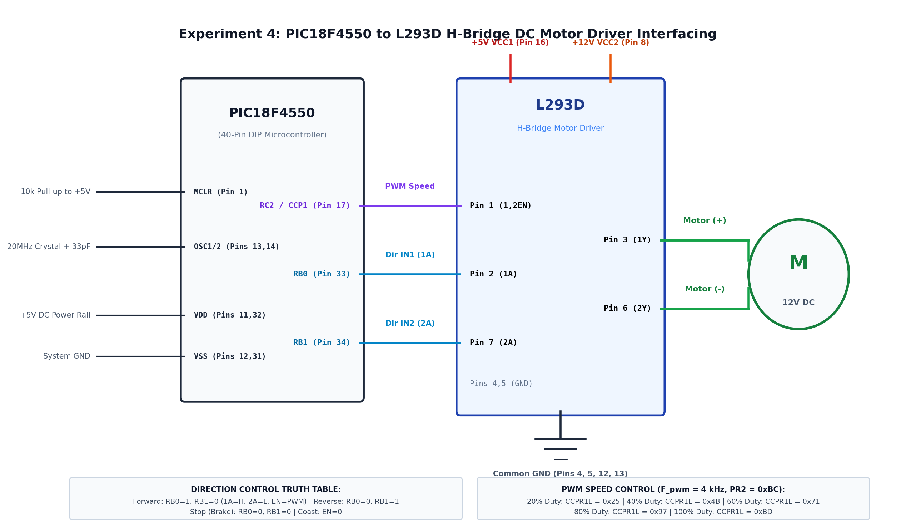
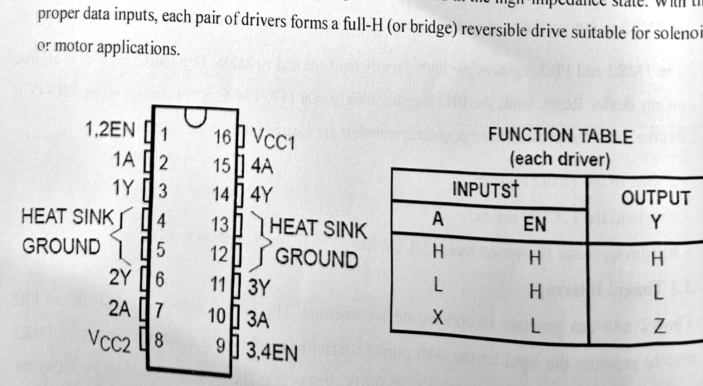
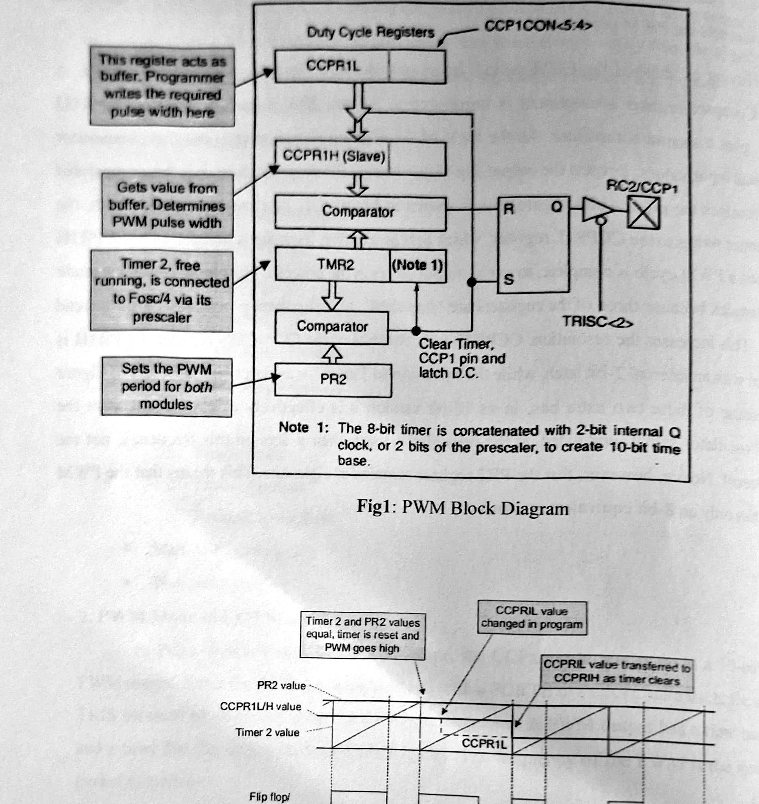
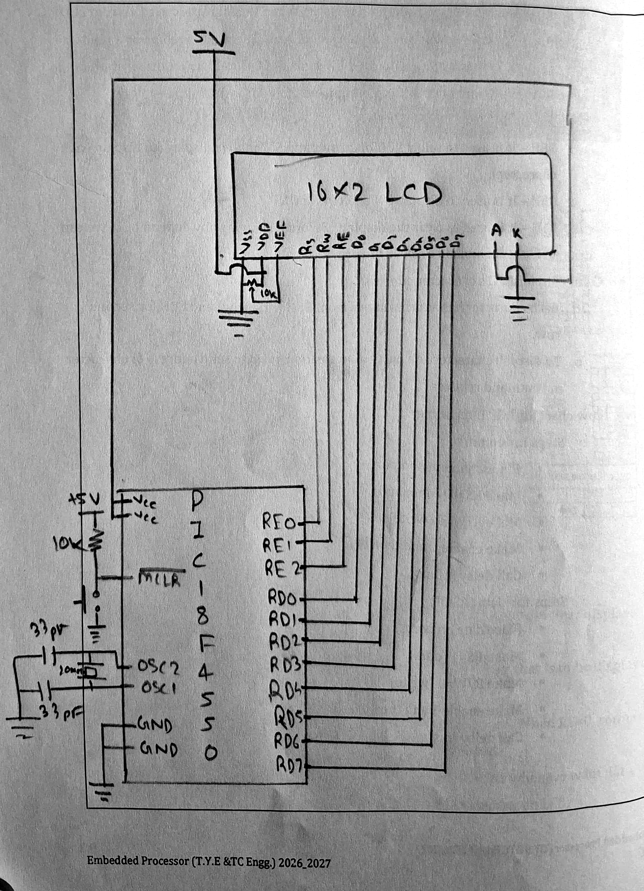

Interfacing LEDs to 8051 (AT89C51) & Software Delay Generation
Study the bidirectional I/O port structure of the AT89C51 microcontroller. Interface an 8-LED bar display to Port 1 in active-low current sinking mode, implement software delay loops calibrated for an 11.0592 MHz crystal, and execute Hexadecimal/BCD Up/Down Counting and LED Chasing sequences.

Verified Hardware Pin Connections (Active-Low Current Sink Mode)
| AT89C51 Pin | Signal Name | Series Resistor | Connected Component | Electrical Logic | Circuit Notes |
|---|---|---|---|---|---|
Pin 1 |
P1.0 | 470 Ω | LED 0 (Cathode) | Active-Low (0 = ON, 1 = OFF) | Bit 0 of Lower Nibble. Anode tied to +5V VCC rail. |
Pin 2 |
P1.1 | 470 Ω | LED 1 (Cathode) | Active-Low (0 = ON, 1 = OFF) | Bit 1 of Lower Nibble. Anode tied to +5V VCC rail. |
Pin 3 |
P1.2 | 470 Ω | LED 2 (Cathode) | Active-Low (0 = ON, 1 = OFF) | Bit 2 of Lower Nibble. Anode tied to +5V VCC rail. |
Pin 4 |
P1.3 | 470 Ω | LED 3 (Cathode) | Active-Low (0 = ON, 1 = OFF) | Bit 3 of Lower Nibble (LSD boundary). |
Pin 5 |
P1.4 | 470 Ω | LED 4 (Cathode) | Active-Low (0 = ON, 1 = OFF) | Bit 0 of Upper Nibble (MSD boundary). |
Pin 6 |
P1.5 | 470 Ω | LED 5 (Cathode) | Active-Low (0 = ON, 1 = OFF) | Bit 1 of Upper Nibble. Anode tied to +5V VCC rail. |
Pin 7 |
P1.6 | 470 Ω | LED 6 (Cathode) | Active-Low (0 = ON, 1 = OFF) | Bit 2 of Upper Nibble. Anode tied to +5V VCC rail. |
Pin 8 |
P1.7 | 470 Ω | LED 7 (Cathode) | Active-Low (0 = ON, 1 = OFF) | Bit 3 of Upper Nibble (MSB). |
Pin 18, 19 |
XTAL2, XTAL1 | — | 11.0592 MHz Crystal | Oscillator | Two 33 pF ceramic capacitors connected to GND. |
Pin 9 |
RST | 8.2 kΩ to GND | 10 µF Cap to VCC + Pushbutton | Active-High Reset | Provides minimum 2 machine cycles high on power-up. |
Pin 31 |
/EA / VPP | — | Tied directly to +5V | Internal ROM Select | Enables execution from internal on-chip 4KB Flash ROM. |
F_mc = F_osc / 12 = 11.0592 MHz / 12 = 921.6 kHzT_mc = 1 / 921.6 kHz = 1.085069 µsSoftware Delay Subroutine Calibration:
A nested C loop executes approximately 8 machine cycles per inner loop iteration:
Count per ms = 1 ms / (8 * 1.085 µs) ≈ 1275 iterationsTherefore, calling
delay(100) yields an accurate 100 ms display delay.
/*
* ============================================================================
* PUNE INSTITUTE OF COMPUTER TECHNOLOGY, PUNE - 411043
* Department of Electronics & Telecommunication Engineering
* Course: EPL (Embedded Processors Laboratory) | Class: T.Y. E&TC Engg.
*
* EXPT. NO.: 1 (Part B)
* TITLE: Interfacing LEDs with 89C51 - Two-Digit Hexadecimal Up/Down Counter
*
* PROBLEM STATEMENT:
* B. Write a program in C language for up/down counting of hex numbers
* up to two digits. Display the result on LEDs connected to PORT P1.
*
* OBJECTIVES:
* a. To study the Port structure of 8051 Microcontroller.
* b. To study hexadecimal representation on 8-LED display.
* c. To study loop-based delay generation.
* d. To study up/down counting implementation.
*
* S/W PACKAGES AND H/W USED:
* Keil uVision IDE, Windows 10, AT89C51 / AT89S52 Universal Trainer Board
*
* ----------------------------------------------------------------------------
* THEORY & HEXADECIMAL REPRESENTATION (Section 1.2, Page 1.2):
* ----------------------------------------------------------------------------
* An 8-bit port (P1) can represent two hexadecimal digits (0x00 to 0xFF):
* - Upper nibble (P1.7 - P1.4) displays the Most Significant Digit (0 to F).
* - Lower nibble (P1.3 - P1.0) displays the Least Significant Digit (0 to F).
*
* ----------------------------------------------------------------------------
* ALGORITHM 2.2: Up/Down Counting of Hex Numbers (Page 1.4):
* ----------------------------------------------------------------------------
* 1. Start.
* 2. Set the counter register value (start at 0x00).
* 3. Send hexadecimal number to port pins (P1 = i).
* 4. Call delay subroutine of 100 ms.
* 5. Increment hexadecimal number until 0xFF (Up Count).
* 6. Decrement hexadecimal number down to 0x00 (Down Count).
* 7. Repeat continuously in an infinite loop.
* ============================================================================
*/
#include <reg51.h>
/* Delay function calibrated for 11.0592 MHz clock (~1 ms per count) */
void delay(unsigned int time)
{
unsigned int i, j;
for (i = 0; i < time; i++)
{
for (j = 0; j < 1275; j++);
}
}
void main(void)
{
unsigned int count;
while (1)
{
/* --- Hexadecimal UP Counting: 0x00 to 0xFF (0 to 255) --- */
for (count = 0; count <= 255; count++)
{
P1 = count; /* Output 8-bit hex count on PORT 1 */
delay(100); /* 100 ms delay between count states */
}
/* --- Hexadecimal DOWN Counting: 0xFF down to 0x00 --- */
for (count = 255; count > 0; count--)
{
P1 = count; /* Output 8-bit hex count on PORT 1 */
delay(100); /* 100 ms delay between count states */
}
P1 = 0x00;
delay(100);
}
}Interfacing Pushbuttons, LEDs, Relay & Buzzer to PIC18F4550
Configure PIC18F4550 Special Function Registers (TRIS, PORT, LAT, ADCON1, INTCON2). Read active-low tactile switches with weak pull-ups, drive an 8-LED bar graph on Port D, and switch high-power inductive loads (electromechanical relay and piezoelectric buzzer) using NPN transistor drivers with flyback protection.

Verified Hardware Pin Connections
| PIC18F Pin | Signal Name | TRIS Bit | Connected Component | Driver / Interface | Circuit Function |
|---|---|---|---|---|---|
Pin 34 |
RB1 | TRISB1 = 1 |
Push Button SW0 | 10 kΩ pull-up to +5V | SW0 pressed = Logic 0. Initiates Left-to-Right chasing + turns ON Relay & Buzzer. |
Pin 33 |
RB0 | TRISB0 = 1 |
Push Button SW1 | 10 kΩ pull-up to +5V | SW1 pressed = Logic 0. Initiates Right-to-Left chasing + turns OFF Relay & Buzzer. |
Pin 16 |
RC1 | TRISC1 = 0 |
5V Electromechanical Relay | BC547 NPN + 1kΩ base resistor | 1N4007 reverse-biased diode across coil absorbs inductive kickback voltage. |
Pin 17 |
RC2 | TRISC2 = 0 |
5V Piezoelectric Buzzer | BC547 NPN + 1kΩ base resistor | High logic (1) saturates transistor, completing circuit to sound buzzer. |
Pins 19–30 |
RD0 - RD7 | TRISD = 0x00 |
8-LED Bar Graph | Eight 470 Ω series resistors | Active-High sourcing mode. Anodes connect to Port D; Cathodes to GND. |
ADCON1 = 0x0F; (Configures all ADC channel pins AN0-AN12 as digital I/O).2. Weak Pull-Up Activation:
INTCON2bits.RBPU = 0; (Enables internal PORTB pull-ups).3. Direction Registers:
TRISBbits.TRISB0 = 1; TRISBbits.TRISB1 = 1; TRISD = 0x00; TRISCbits.TRISC1 = 0; TRISCbits.TRISC2 = 0;4. Output Latches: Always write to
LATC / LATD to eliminate read-modify-write hazards on high-speed capacitive loads.
/*
* ============================================================================
* PUNE INSTITUTE OF COMPUTER TECHNOLOGY, PUNE - 411043
* Department of Electronics & Telecommunication Engineering
* Course: EPL (Embedded Processors Laboratory) | Class: T.Y. E&TC Engg.
*
* EXPT. NO.: 2
* TITLE: Interfacing Push buttons, LEDs, Relay & Buzzer to PIC Microcontroller
*
* PROBLEM STATEMENT:
* Interface Push buttons, LEDs, Relay and Buzzer to PIC Microcontroller.
* Write a program in Embedded C to interact with peripherals as follows:
* a. LEDs start chasing from left to right and turn ON Relay and Buzzer
* whenever pushbutton 1 (Switch SW0 / RB1) is pressed.
* b. LEDs start chasing from right to left and turn OFF Relay and Buzzer
* whenever pushbutton 2 (Switch SW1 / RB0) is pressed.
*
* OBJECTIVES:
* a. To understand the PORT Structure of PIC Microcontroller.
* b. To study the SFRs to control the PORT Pins (TRIS, PORT, LAT).
* c. To interface common peripherals like pushbuttons, LEDs, relay, buzzer.
* d. To understand the use of MPLAB IDE and C18 Compiler.
* e. To write a simple program in Embedded C.
*
* S/W PACKAGES AND H/W USED:
* MPLAB IDE v8.92, MPLAB C18 Compiler v3.47, Explore PIC Development Board
*
* ----------------------------------------------------------------------------
* PIN CONNECTIONS (INTERFACING DIAGRAM, Page 2.8):
* ----------------------------------------------------------------------------
* Peripheral PIC18F4550 Pin Function / Notes
* ---------- -------------- ----------------
* Push Button SW0 RB1 (Pin 34) Input with 10k pull-up & internal RBPU
* Push Button SW1 RB0 (Pin 33) Input with 10k pull-up & internal RBPU
* Relay Driver RC1 (Pin 16) Output to NPN base (1k) + flyback diode
* Buzzer Driver RC2 (Pin 17) Output to NPN base (1k R9) + Buzzer
* 8x LEDs RD0 - RD7 Outputs connected via 470 Ohm resistors
*
* ----------------------------------------------------------------------------
* ALGORITHM (Section 5, Page 2.9):
* ----------------------------------------------------------------------------
* 1. Activate the internal pull-up on PORTB (INTCON2bits.RBPU = 0).
* 2. Disable all analog inputs (ADCON1 = 0x0F) to configure pins as digital I/O.
* 3. Configure RB0 and RB1 as inputs for sensing SW1 and SW0 respectively.
* 4. Configure:
* a. RC1 (Relay) as output (TRISCbits.TRISC1 = 0).
* b. RC2 (Buzzer) as output (TRISCbits.TRISC2 = 0).
* c. PORTD (LEDs) as output (TRISD = 0x00).
* 5. Initialize value for LEDs, Buzzer, and Relay (Keep all OFF on reset).
* 6. Check status of RB1 (SW0 press):
* - Turn ON Relay (LATC1 = 1) and Buzzer (LATC2 = 1).
* - Chase LEDs on PORTD from left to right (RD0 -> RD7).
* 7. Check status of RB0 (SW1 press):
* - Turn OFF Relay (LATC1 = 0) and Buzzer (LATC2 = 0).
* - Chase LEDs on PORTD from right to left (RD7 -> RD0).
* ============================================================================
*/
#include <p18f4550.h>
#include "vector_relocate.h"
/* Software delay function calibrated for 48 MHz clock (~1 ms per count) */
void delay(unsigned int time)
{
unsigned int i, j;
for (i = 0; i < time; i++)
{
for (j = 0; j < 710; j++);
}
}
void main(void)
{
/* 2. Disable all analog inputs (all pins digital I/O) */
ADCON1 = 0x0F;
/* 1. Activate internal weak pull-up resistors on PORTB */
INTCON2bits.RBPU = 0;
/* 3. Configure RB0 (SW1) and RB1 (SW0) as digital inputs */
TRISBbits.TRISB0 = 1;
TRISBbits.TRISB1 = 1;
/* 4a, 4b. Configure RC1 (Relay) and RC2 (Buzzer) as digital outputs */
TRISCbits.TRISC1 = 0;
TRISCbits.TRISC2 = 0;
/* 4c. Configure PORTD (8x LEDs) as digital output */
TRISD = 0x00;
/* 5. Initialize outputs: Keep LEDs, Buzzer, and Relay OFF on startup */
PORTD = 0x00;
LATCbits.LATC1 = 0; /* Relay OFF */
LATCbits.LATC2 = 0; /* Buzzer OFF */
while (1)
{
/*
* 6. Check status of RB1 for Switch SW0 press (active-low: logic 0).
* Turn ON Relay & Buzzer; chase LEDs from left to right (RD0 -> RD7).
*/
if (PORTBbits.RB1 == 0)
{
LATCbits.LATC1 = 1; /* Turn ON Relay */
LATCbits.LATC2 = 1; /* Turn ON Buzzer */
/* Chase LEDs from left to right: RD0 (0x01) up to RD7 (0x80) */
PORTD = 0x01;
while (PORTD != 0x80)
{
delay(250);
PORTD = PORTD << 1;
}
delay(250);
}
/*
* 7. Check status of RB0 for Switch SW1 press (active-low: logic 0).
* Turn OFF Relay & Buzzer; chase LEDs from right to left (RD7 -> RD0).
*/
if (PORTBbits.RB0 == 0)
{
LATCbits.LATC1 = 0; /* Turn OFF Relay */
LATCbits.LATC2 = 0; /* Turn OFF Buzzer */
/* Chase LEDs from right to left: RD7 (0x80) down to RD0 (0x01) */
PORTD = 0x80;
while (PORTD != 0x01)
{
delay(250);
PORTD = PORTD >> 1;
}
delay(250);
}
}
}10 Hz Square Wave Generation using Timer 0 Interrupt & DSO
Implement the 16-bit Timer 0 interrupt architecture on PIC18F4550. Derive exact reload counts for 50 ms toggle delay (total period T = 100 ms, Frequency = 10.00 Hz), hook up the RB0 pin to a Digital Storage Oscilloscope (DSO), and measure waveform symmetry, amplitude, and frequency.

Verified DSO Hookup Connections
| PIC18F4550 Pin | Pin Function | DSO Terminal | Expected Signal | DSO Timebase & Scale |
|---|---|---|---|---|
Pin 33 (RB0) |
Timer 0 Toggle Output (GPIO) | DSO CH1 Probe Tip (+) | 10.00 Hz Square Wave (0V to 5V) | Volts/Div: 1.0 V/div or 2.0 V/div |
Pin 12 / 31 (VSS) |
Circuit System Ground | DSO Probe Alligator Clip (-) | 0.00 V Ground Reference | Sec/Div: 20 ms/div (Full cycle = 5 divisions = 100 ms) |
T_delay = (65536 - Count) * (4 / F_osc) * PrescalerCalculation for 48 MHz Universal Board:
• Desired frequency:
F = 10 Hz → Period T = 1 / 10 = 100 ms• Half-cycle delay (per toggle):
T_delay = 50 ms = 50,000 µs• Internal instruction cycle:
Tcy = 4 / 48 MHz = 0.08333 µs• Selected Prescaler:
1:16 (T0CONbits.T0PS = 011)• Effective Timer Clock:
0.08333 µs * 16 = 1.3333 µs• Required Count:
50,000 µs / 1.3333 µs = 37,500 counts• Reload Value (N):
65536 - 37500 = 28036 = 0x6D84• Register Loading:
TMR0H = 0x6D; TMR0L = 0x84;Calculation for 20 MHz Crystal (Alternative Lab Kit):
• Required Count:
50,000 µs / (0.2 µs * 16) = 15,625 counts• Reload Value:
65536 - 15625 = 49911 = 0xC2F7 (TMR0H = 0xC2, TMR0L = 0xF7).
/*
* ============================================================================
* PUNE INSTITUTE OF COMPUTER TECHNOLOGY, PUNE - 411043
* Department of Electronics & Telecommunication Engineering
* Course: EPL (Embedded Processors Laboratory) | Class: T.Y. E&TC Engg.
*
* EXPT. NO.: 3
* TITLE: Generation of Square wave using Timer 0 interrupt.
*
* PROBLEM STATEMENT:
* Implement Timer 0 interrupt concept using PIC18F4550 uC to generate a
* square wave of 10 Hz frequency.
*
* OBJECTIVES:
* a. To understand the basic concepts of Timer and Counter.
* b. To study in detail Timer 0 of PIC Microcontroller.
* c. To study interrupt structure of PIC Microcontroller.
* d. To use timer interrupt and its related SFRs.
*
* S/W PACKAGES AND H/W USED:
* MPLAB IDE, C18 Compiler, DSO, Universal Board of PIC18F and PICkit3
*
* REFERENCES:
* a. Mazidi, PIC microcontroller & embedded system 3rd Edition, Pearson
* b. Datasheet of PIC18F4550 / PIC18F4520 / PIC18F458, www.microchip.com
*
* ----------------------------------------------------------------------------
* CALCULATION FOR GENERATING SQUARE WAVE OF 10 Hz (Section 5.2):
* ----------------------------------------------------------------------------
* Desired Wave Frequency (F) = 10 Hz
* Desired Time Period (T) = 1 / F = 1 / 10 Hz = 0.1 s = 100 ms = 100,000 us
* Half-cycle time (delay per toggle, Td) = T / 2 = 50 ms = 50,000 us
*
* Oscillator Frequency (Fosc) = 48 MHz (Universal Board PIC18F4550)
* Internal Instruction Clock (Fcy) = Fosc / 4 = 48 MHz / 4 = 12 MHz
* Timer Period (Tp) = 1 / Fcy = 4 / Fosc = 1 / 12 MHz = 0.08333 us (1/12 us)
*
* Using Timer0 in 16-bit Mode with Prescaler = 1:16 (T0CON<2:0> = 011):
* Equivalent Timer Period (Teq) = Tp * Prescaler = (1/12 us) * 16 = 4/3 us
* Number of counts (n) = Td / Teq = 50,000 us / (4/3 us)
* = (50,000 * 3) / 4 = 37,500 counts
*
* Initial 16-bit Register Count = 65,536 - n
* = 65,536 - 37,500 = 28,036
*
* Converting 28,036 to Hexadecimal:
* 28,036 / 256 = 109 with remainder 132
* 109 = 0x6D (TMR0H)
* 132 = 0x84 (TMR0L)
* Initial hex value = 0x6D84
* TMR0H = 0x6D
* TMR0L = 0x84
*
* ----------------------------------------------------------------------------
* T0CON (Timer0 Control Register) Configuration:
* ----------------------------------------------------------------------------
* Bit 7: TMR0ON = 0 (Timer stopped during configuration, enabled later)
* Bit 6: T08BIT = 0 (16-bit timer/counter mode)
* Bit 5: T0CS = 0 (Internal instruction cycle clock CLKO / Fosc/4)
* Bit 4: T0SE = 0 (Increment on low-to-high transition)
* Bit 3: PSA = 0 (Timer0 prescaler is assigned)
* Bits 2-0: TOPS2:TOPS0 = 011 (Prescaler 1:16)
*
* T0CON = 0b00000011 = 0x03 (Note: When timer is ON, T0CON = 0x83)
* Note: Algorithm step 2 refers to 16-bit mode, internal clock, 1:16 prescaler.
* ============================================================================
*/
#include <p18f4550.h>
/* Function prototypes */
void timer0_isr(void);
extern void _startup(void);
/* Relocate Reset Vector to 0x1000 for USB HID Bootloader compatibility */
#pragma code _RESET_INTERRUPT_VECTOR = 0x1000
void _reset(void)
{
_asm goto _startup _endasm
}
#pragma code
/* Relocate High Priority Interrupt Vector to 0x1008 as specified in Algorithm */
#pragma code _HIGH_INTERRUPT_VECTOR = 0x1008
void high_vector(void)
{
_asm goto timer0_isr _endasm
}
#pragma code
/*
* ----------------------------------------------------------------------------
* Step 6: Interrupt Service Routine (ISR) for Timer 0
* ----------------------------------------------------------------------------
*/
#pragma interrupt timer0_isr
void timer0_isr(void)
{
/* Check if Timer 0 overflow interrupt flag is set */
if (INTCONbits.TMR0IF == 1)
{
/* 6a. Toggle the PORT pin RB0 */
PORTBbits.RB0 = ~PORTBbits.RB0;
/* 6b. Clear the TMR0IF flag for the next round */
INTCONbits.TMR0IF = 0;
/* 6c. Reload TMR0H first, then TMR0L with calculated count (0x6D84) */
TMR0H = 0x6D;
TMR0L = 0x84;
}
}
/*
* ----------------------------------------------------------------------------
* Main Function - Follows Section 7: Algorithm
* ----------------------------------------------------------------------------
*/
void main(void)
{
/* Set all ADC pins as digital I/O */
ADCON1 = 0x0F;
/* 1. Configure Port pin RB0 as output and initial value 0 */
TRISBbits.TRISB0 = 0;
PORTBbits.RB0 = 0;
/*
* 2. Load value in T0CON: 16-bit mode, internal clock source (Fosc/4),
* prescaler assigned with 1:16.
* T0CON = 0x03 (TMR0ON=0, T08BIT=0, T0CS=0, T0SE=0, PSA=0, TOPS=011)
*/
T0CON = 0x03;
/* 3. Load registers TMR0H first and then TMR0L with calculated count */
TMR0H = 0x6D;
TMR0L = 0x84;
/* 4. Enable Timer0 Interrupt and Global Interrupt using INTCON Register */
INTCONbits.TMR0IF = 0; /* Clear Timer0 flag */
INTCONbits.TMR0IE = 1; /* Enable Timer0 overflow interrupt */
INTCONbits.GIE = 1; /* Enable Global Interrupts */
/* 5. Start the timer by setting TMR0ON bit in T0CON (T0CON becomes 0x83) */
T0CONbits.TMR0ON = 1;
/*
* 7. Idle loop: CPU remains free while interrupt generates 10 Hz square wave.
* Result can be verified on DSO / Oscilloscope connected to pin RB0.
*/
while (1)
{
/* Background processing can be added here if needed */
}
}DC Motor Speed & Direction Control via L293D H-Bridge & CCP1 PWM
Configure the on-chip Capture/Compare/PWM (CCP1) module and Timer 2 of PIC18F4550 to generate a 4 kHz PWM waveform. Interface the L293D quadruple half-H driver to vary motor speed across 20%, 40%, 60%, 80%, and 100% duty cycles, and switch rotation between Forward and Reverse directions.



Verified Hardware Pin Connections
| PIC18F4550 Pin | Signal Name | L293D Pin | L293D Pin Name | Connection & Voltage | Circuit Function |
|---|---|---|---|---|---|
Pin 17 |
RC2 / CCP1 | Pin 1 |
1,2EN (Enable 1) | PWM Signal (0–5V, 4 kHz) | Speed control: Pulse width modulation controls average motor voltage. |
Pin 33 |
RB0 | Pin 2 |
1A (Input 1) | Digital Output (0 or 1) | Direction Control IN1: Combined with 2A to set forward/reverse. |
Pin 34 |
RB1 | Pin 7 |
2A (Input 2) | Digital Output (0 or 1) | Direction Control IN2: Inverted with respect to 1A for rotation. |
| — | Power Rail | Pin 16 |
VCC1 (Logic Supply) | +5V Regulated DC | Powers internal CMOS input logic gates of the L293D. |
| — | Power Rail | Pin 8 |
VCC2 (Motor Supply) | +12V External DC Supply | Supplies high surge current to the 12V DC motor windings. |
Pins 12, 31 |
VSS (GND) | Pins 4, 5, 12, 13 |
GND (Heat Sink) | Common Ground Rail | All ground leads must be tied together to ensure common reference. |
| — | Motor Terminal (+) | Pin 3 |
1Y (Output 1) | Switched Output | Connected directly to 12V DC Motor Terminal 1. |
| — | Motor Terminal (-) | Pin 6 |
2Y (Output 2) | Switched Output | Connected directly to 12V DC Motor Terminal 2. |
PWM Period = [(PR2) + 1] * 4 * T_osc * (TMR2 Prescaler)For
F_pwm = 4 kHz (Period = 250 µs), F_osc = 48 MHz (T_osc = 0.02083 µs), Prescaler = 16:250 µs = [(PR2) + 1] * 4 * (0.02083 µs) * 16 = [(PR2) + 1] * 1.3333 µs(PR2) + 1 = 250 / 1.3333 = 187.5 ≈ 187 → PR2 = 186 (0xBC)2. 10-Bit Duty Cycle Formula:
PWM Duty Cycle = (CCPR1L:CCP1CON<5:4>) * T_osc * (TMR2 Prescale Value)Maximum 10-bit count for 100% duty =
4 * (PR2 + 1) = 4 * 187 = 748 counts.
Official Duty Cycle Register Values
| Speed Setting | Duty Cycle (%) | Calculated Duty Time | 10-Bit Value (Decimal) | CCPR1L (Hex) | CCP1CON<5:4> | Motor Status |
|---|---|---|---|---|---|---|
| Step 1 | 20% | 50 µs | 150 counts | 0x25 (37) |
10 |
Low Speed Rotation |
| Step 2 | 40% | 100 µs | 300 counts | 0x4B (75) |
00 |
Medium-Low Speed |
| Step 3 | 60% | 150 µs | 450 counts | 0x71 (113) |
10 |
Medium-High Speed |
| Step 4 | 80% | 200 µs | 600 counts | 0x96 (150) |
00 |
High Speed Rotation |
| Step 5 | 100% | 250 µs | 748 counts | 0xBB (187) |
00 |
Maximum Speed |
/*
* ============================================================================
* PUNE INSTITUTE OF COMPUTER TECHNOLOGY, PUNE - 411043
* Department of Electronics & Telecommunication Engineering
* Course: EPL (Embedded Processors Laboratory) | Class: T.Y. E&TC Engg.
*
* EXPT. NO.: 4
* TITLE: Generation of PWM Signal
*
* PROBLEM STATEMENT:
* Design and develop a PWM based motor speed control system using CCP PWM
* mode using PIC18F4550 uC.
*
* OBJECTIVES:
* a. To understand the working of PWM.
* b. To study the on-chip CCP Module (PWM section) of PIC Microcontroller.
* c. To interface DC motor, via Driver IC L293D, to PIC Microcontroller.
* d. Apply the PWM signal to control the speed of DC Motor.
*
* S/W PACKAGES AND H/W USED:
* MPLAB IDE, C18 Compiler, Universal Board of PIC18F and DC Motor
*
* REFERENCES:
* a. Mazidi, PIC microcontroller & embedded system 3rd Edition, Pearson
* b. Datasheet of PIC18F4550 / PIC18F4520 / PIC18F458, www.microchip.com
* c. Datasheet of L293D, www.ti.com
*
* ----------------------------------------------------------------------------
* PIN CONNECTIONS (INTERFACING DIAGRAM):
* ----------------------------------------------------------------------------
* PIC18F4550 Pin L293D Motor Driver Pin DC Motor
* ----------------- ---------------------- --------
* RC2/CCP1 (Pin 17) ---> Pin 1 (1,2EN) - PWM Speed Enable
* RB0 (Pin 33) ---> Pin 2 (1A) - Direction IN1
* RB1 (Pin 34) ---> Pin 7 (2A) - Direction IN2
* Pin 3 (1Y) ----------------> Terminal 1
* Pin 6 (2Y) ----------------> Terminal 2
* Pins 4,5,12,13 -> GND
* Pin 16 (VCC1) -> +5V (Logic Supply)
* Pin 8 (VCC2) -> +12V/+5V (Motor Supply)
*
* ----------------------------------------------------------------------------
* 5. CALCULATION FOR PWM OPERATION (Section 5, Page 4.11):
* ----------------------------------------------------------------------------
* Given Parameters:
* Oscillator Frequency (Fosc) = 48 MHz
* Target PWM Frequency (Fpwm) = 4 kHz (4000 Hz)
* Tosc = 1 / Fosc = 1 / 48 MHz = 0.020833 us (20.833 ns)
* PWM Period (Tpwm) = 1 / Fpwm = 1 / 4000 = 250 us
*
* (A) Finding PR2 Register Value:
* PR2 = [ Fosc / (4 * Fpwm * (TMR2 Prescaler)) ] - 1
* Using Timer 2 Prescaler = 16:
* PR2 = [ 48,000,000 / (4 * 4000 * 16) ] - 1
* = [ 48,000,000 / 256,000 ] - 1
* = 187.5 - 1 = 186.5
* Selecting PR2 = 186 (gives Tpwm = 249.33 us, Fpwm = 4.01 kHz ~ 4 kHz)
* (Note: PR2 = 187 can also be used, yielding Fpwm = 3.989 kHz ~ 4 kHz).
*
* (B) 10-Bit PWM Duty Cycle Calculation:
* CCPR1L:CCP1CON<5:4> = [ (%DCpwm * Fosc) / (100 * Fpwm * (TMR2 Prescaler)) ]
* = %DCpwm * [ 48,000,000 / (100 * 4000 * 16) ]
* = %DCpwm * [ 48,000,000 / 6,400,000 ]
* = %DCpwm * 7.5
*
* ----------------------------------------------------------------------------
* CALCULATION TABLE (Page 4.11):
* ----------------------------------------------------------------------------
* Duty Cycle | 10-Bit Value | CCPR1L (Upper 8 bits) | CCP1CON<5:4> (DC1B1:DC1B0)
* -----------|--------------|-----------------------|---------------------------
* 20% | 20 * 7.5=150| 150 >> 2 = 37 (0x25) | 150 & 3 = 2 (0b10)
* 40% | 40 * 7.5=300| 300 >> 2 = 75 (0x4B) | 300 & 3 = 0 (0b00)
* 60% | 60 * 7.5=450| 450 >> 2 = 112(0x70) | 450 & 3 = 2 (0b10)
* 80% | 80 * 7.5=600| 600 >> 2 = 150(0x96) | 600 & 3 = 0 (0b00)
* 100% | 100 * 7.5=750| 750 >> 2 = 187(0xBB) | 750 & 3 = 2 (0b10)
* ============================================================================
*/
#include <p18f4550.h>
#define PR2_VALUE 186 /* PR2 value for 4 kHz PWM with 1:16 prescaler at 48 MHz */
extern void _startup(void);
/* Relocate Reset Vector to 0x1000 for USB Bootloader compatibility */
#pragma code _RESET_INTERRUPT_VECTOR = 0x1000
void _reset(void)
{
_asm goto _startup _endasm
}
#pragma code
/* Delay function calibrated for 48 MHz clock (~1 ms per count) */
void delay(unsigned int time)
{
unsigned int i, j;
for (i = 0; i < time; i++)
{
for (j = 0; j < 710; j++);
}
}
/*
* ----------------------------------------------------------------------------
* Function to set 10-Bit PWM Duty Cycle:
* - Upper 8 bits are loaded into CCPR1L
* - Lower 2 bits are loaded into CCP1CON<5:4> (DC1B1:DC1B0)
* - PWM mode bits CCP1CON<3:0> = 1100 (0x0C) are preserved
* ----------------------------------------------------------------------------
*/
void set_pwm_duty_10bit(unsigned int duty_10bit)
{
/* Upper 8 bits loaded into CCPR1L */
CCPR1L = (unsigned char)(duty_10bit >> 2);
/* Lower 2 bits loaded into CCP1CON<5:4> */
CCP1CONbits.DC1B1 = (duty_10bit >> 1) & 0x01;
CCP1CONbits.DC1B0 = duty_10bit & 0x01;
}
/*
* ----------------------------------------------------------------------------
* Main Function - PWM DC Motor Speed Control
* ----------------------------------------------------------------------------
*/
void main(void)
{
/* Look-up table for exact 10-bit duty cycle values as per Table 5 */
/* Index: 0 -> 20%, 1 -> 40%, 2 -> 60%, 3 -> 80%, 4 -> 100% */
unsigned int duty_steps[5] = {150, 300, 450, 600, 750};
int i;
/* Set all analog pins to digital I/O mode */
ADCON1 = 0x0F;
/* Configure motor direction control pins (RB0 and RB1) as output */
TRISBbits.TRISB0 = 0;
TRISBbits.TRISB1 = 0;
/* Configure RC2 / CCP1 pin as digital output for PWM signal */
TRISCbits.TRISC2 = 0;
/* Set motor direction to Forward: 1A (RB0) = 1, 2A (RB1) = 0 */
PORTBbits.RB0 = 1;
PORTBbits.RB1 = 0;
/*
* Step 1: Set PWM period using PR2 register
* PR2 = 186 gives 4 kHz PWM frequency with 1:16 prescaler at Fosc = 48 MHz
*/
PR2 = PR2_VALUE;
/*
* Step 2: Configure CCP1CON register for PWM mode
* Bits 3-0 = 1100 (PWM mode)
* Bits 5-4 = 00 (Initial LSBs of duty cycle = 0)
*/
CCP1CON = 0x0C;
/*
* Step 3: Set initial duty cycle to 0 (Motor stopped initially)
*/
set_pwm_duty_10bit(0);
/*
* Step 4: Configure Timer 2
* T2CON = 0x06:
* Bit 2 (TMR2ON) = 1 (Timer 2 is ON)
* Bits 1-0 (T2CKPS) = 10 (Timer 2 Prescaler is 1:16)
* Bits 6-3 (T2OUTPS)= 0000 (Postscaler 1:1)
*/
T2CON = 0x06;
while (1)
{
/*
* Gradually increase motor speed through calculated duty cycle steps:
* 20% (150) -> 40% (300) -> 60% (450) -> 80% (600) -> 100% (750)
*/
for (i = 0; i < 5; i++)
{
set_pwm_duty_10bit(duty_steps[i]);
delay(1500); /* Hold each speed for 1.5 seconds to observe */
}
/*
* Gradually decrease motor speed through calculated duty cycle steps:
* 100% (750) -> 80% (600) -> 60% (450) -> 40% (300) -> 20% (150)
*/
for (i = 4; i >= 0; i--)
{
set_pwm_duty_10bit(duty_steps[i]);
delay(1500); /* Hold each speed for 1.5 seconds to observe */
}
/* Stop motor briefly before next ramp cycle */
set_pwm_duty_10bit(0);
delay(1000);
}
}Interfacing 16x2 Alphanumeric LCD to PIC18F4550
Interface an industry-standard HD44780-compatible 16x2 dot-matrix liquid crystal display (LCD) to PIC18F4550 in 8-bit bidirectional mode. Master the command and data sequences, RS/RW/EN control strobing, cursor addressing (0x80 for Line 1, 0xC0 for Line 2), and contrast potentiometer calibration.

Verified Hardware Pin Connections
| PIC18F Pin | Signal Name | LCD Pin | LCD Symbol | Signal Type | Functional Operation |
|---|---|---|---|---|---|
Pin 8 |
RE0 | Pin 4 |
RS | Control Output | Register Select: 0 = Command Register, 1 = Data Register. |
Pin 9 |
RE1 | Pin 5 |
RW | Control Output | Read / Write: 0 = Write operation (to LCD), 1 = Read operation. |
Pin 10 |
RE2 | Pin 6 |
EN | Control Output | Enable Strobe: Latches data on High-to-Low transition pulse. |
Pins 19–30 |
RD0 - RD7 | Pins 7–14 |
D0 - D7 | 8-Bit Data Bus | Transmits 8-bit command codes and ASCII character bytes. |
Pins 12, 31 |
GND | Pin 1 |
VSS | Power Ground | Connects to 0V system ground. |
Pins 11, 32 |
+5V VDD | Pin 2 |
VDD | Power Supply | Connects to +5.0 V DC regulated supply. |
| — | Pot Wiper | Pin 3 |
VEE | Contrast Adjust | Connected to wiper of 10 kΩ potentiometer (between +5V and GND). |
| — | +5V Rail | Pin 15 |
LED+ (A) | Backlight Anode | Tied to +5V through a 220 Ω series current limiting resistor. |
Pins 12, 31 |
GND | Pin 16 |
LED- (K) | Backlight Cathode | Tied directly to common ground. |
| Hex Code | Command Description | Execution Time | Usage in Initialization Sequence |
|---|---|---|---|
0x38 |
Function Set: 2 lines, 5x7 matrix, 8-bit interface | 37 µs | Step 1: Sent three times on startup to lock 8-bit mode. |
0x0E |
Display ON, Cursor ON, Cursor Blink OFF | 37 µs | Step 2: Activates LCD display screen with visible cursor. |
0x0C |
Display ON, Cursor OFF | 37 µs | Used when displaying static banners without blinking line. |
0x01 |
Clear Entire Display Screen | 1.52 ms | Step 3: Clears DDRAM contents and resets cursor to home. |
0x06 |
Entry Mode: Auto-increment cursor position rightward | 37 µs | Step 4: Ensures subsequent characters advance automatically. |
0x80 |
Set DDRAM Address: Force cursor to Line 1, Column 1 | 37 µs | Addresses Line 1 (0x80 to 0x8F for 16 characters). |
0xC0 |
Set DDRAM Address: Force cursor to Line 2, Column 1 | 37 µs | Addresses Line 2 (0xC0 to 0xCF for 16 characters). |
/*
* ============================================================================
* PUNE INSTITUTE OF COMPUTER TECHNOLOGY, PUNE - 411043
* Department of Electronics & Telecommunication Engineering
* Course: EPL (Embedded Processors Laboratory) | Class: T.Y. E&TC Engg.
*
* EXPT. NO.: 5
* TITLE: LCD Interfacing with PIC18F4550
*
* PROBLEM STATEMENT:
* Interface 16x2 LCD module to PIC microcontroller and write a program in
* Embedded C to display characters on 16x2 LCD display.
*
* OBJECTIVES:
* a. To understand the working of LCD module.
* b. To study the LCD section of PIC Microcontroller.
* c. To interface LCD module to PIC Microcontroller (HD44780 8-bit interface).
*
* S/W PACKAGES AND H/W USED:
* MPLAB IDE, C18 Compiler, PICkit3 / USB HID Bootloader, Universal Development Board
*
* REFERENCES:
* a. Mazidi, PIC microcontroller & embedded system 3rd Edition, Pearson
* b. Datasheet of PIC18F4550 / PIC18F4520 / PIC18F458, www.microchip.com
*
* ----------------------------------------------------------------------------
* PIN CONNECTIONS (INTERFACING DIAGRAM, Page 9.4):
* ----------------------------------------------------------------------------
* PIC18F4550 Pin 16x2 LCD Module Pin Description
* ----------------- ------------------- -----------
* RE0 (Pin 8) ---> RS (Pin 4) Register Select (0=Cmd, 1=Data)
* RE1 (Pin 9) ---> RW (Pin 5) Read / Write (0=Write, 1=Read)
* RE2 (Pin 10) ---> EN (Pin 6) Enable (Latch pulse)
* RD0 - RD7 (Pins 19-30) -> D0 - D7 (Pins 7 - 14) 8-Bit Bidirectional Data Bus
* GND ---> VSS (Pin 1) Power Ground
* +5V ---> VDD (Pin 2) +5V Power Supply
* 10k Pot Wiper ---> VEE (Pin 3) Contrast Adjustment
* +5V ---> A / LED+ (Pin 15) Backlight Anode
* GND ---> K / LED- (Pin 16) Backlight Cathode
*
* ----------------------------------------------------------------------------
* LCD COMMAND SUMMARY:
* ----------------------------------------------------------------------------
* 0x38: Function Set: 2 lines, 5x7 matrix, 8-bit mode
* 0x0E: Display ON, cursor ON (or 0x0C: Display ON, cursor OFF)
* 0x01: Clear LCD display screen
* 0x06: Entry Mode: Auto-increment cursor position to right
* 0x80: Force cursor to beginning of 1st row (0xC0 for 2nd row)
* ============================================================================
*/
#include <p18f4550.h>
#define RS PORTEbits.RE0
#define RW PORTEbits.RE1
#define EN PORTEbits.RE2
/* Function Prototypes */
void delay(unsigned int time);
void Lcd_cmd(unsigned char command);
void Lcd_init(void);
void Lcd_data(unsigned char data);
void Lcd_string(const rom char *str);
extern void _startup(void);
/* Relocate Reset Vector to 0x1000 for USB Bootloader compatibility */
#pragma code _RESET_INTERRUPT_VECTOR = 0x1000
void _reset(void)
{
_asm goto _startup _endasm
}
#pragma code
/* Delay routine calibrated for 48 MHz system clock */
void delay(unsigned int time)
{
unsigned int i, j;
for (i = 0; i < time; i++)
{
for (j = 0; j < 710; j++);
}
}
/*
* ----------------------------------------------------------------------------
* Send Command byte to 16x2 LCD
* Steps (Page 9.3):
* 1. Place command on PORTD (D0 - D7)
* 2. Make RS = 0 (Command register select)
* 3. Make RW = 0 (Write operation)
* 4. Generate high-to-low Enable pulse (EN = 1 then EN = 0)
* 5. Call delay
* ----------------------------------------------------------------------------
*/
void Lcd_cmd(unsigned char command)
{
PORTD = command;
RS = 0; /* Command register select */
RW = 0; /* Write operation */
EN = 1;
delay(5);
EN = 0;
delay(5);
}
/*
* ----------------------------------------------------------------------------
* Initialize 16x2 LCD in 8-bit mode
* ----------------------------------------------------------------------------
*/
void Lcd_init(void)
{
delay(15); /* Wait for LCD power-up stabilization */
Lcd_cmd(0x38); /* 8-bit mode, 2 lines, 5x7 dots */
delay(5);
Lcd_cmd(0x01); /* Clear display */
delay(5);
Lcd_cmd(0x0E); /* Display ON, cursor ON */
delay(5);
Lcd_cmd(0x06); /* Entry mode: increment cursor */
delay(5);
Lcd_cmd(0x80); /* Set cursor to line 1, column 1 */
delay(5);
}
/*
* ----------------------------------------------------------------------------
* Send Character (ASCII Data) byte to 16x2 LCD
* Steps (Page 9.3):
* 1. Place data on PORTD (D0 - D7)
* 2. Make RS = 1 (Data register select)
* 3. Make RW = 0 (Write operation)
* 4. Generate high-to-low Enable pulse (EN = 1 then EN = 0)
* 5. Call delay
* ----------------------------------------------------------------------------
*/
void Lcd_data(unsigned char data)
{
PORTD = data;
RS = 1; /* Data register select */
RW = 0; /* Write operation */
EN = 1;
delay(5);
EN = 0;
delay(5);
}
/*
* ----------------------------------------------------------------------------
* Send null-terminated string to LCD
* ----------------------------------------------------------------------------
*/
void Lcd_string(const rom char *str)
{
while (*str)
{
Lcd_data(*str);
str++;
}
}
void main(void)
{
/* Set all analog pins to digital I/O mode */
ADCON1 = 0x0F;
/* Configure PORTD (Data bus D0-D7) and PORTE (Control RS, RW, EN) as outputs */
TRISD = 0x00;
TRISE = 0x00;
/* Initialize LCD */
Lcd_init();
/* Display "HELLO WORLD" on Line 1 */
Lcd_cmd(0x80); /* Cursor to Line 1 */
Lcd_string("HELLO WORLD");
/* Infinite loop - Display remains steady */
while (1)
{
}
}LM35 Temperature Sensor Interfacing with 10-Bit ADC & LCD
Interface the precision analog LM35 temperature sensor (10 mV/°C) to the on-chip 10-bit ADC channel AN0 of PIC18F4550. Sample analog voltages, compute real-time Celsius values with 4.88 mV resolution, and display temperatures on the 16x2 LCD display.
V_in = (ADC_Value * 5.00V) / 1023 = ADC_Value * 4.8876 mVSince LM35 produces 10 mV per 1.0 °C:
Temperature (°C) = V_in (in mV) / 10 mV/°C = (ADC_Value * 4.8876) / 10 = ADC_Value * 0.48876
/*
* Experiment 6: Interface and program a temperature sensor (LM35)
* with PIC18F4550 to display real-time readings on a 16x2 LCD.
*
* Target Microcontroller: PIC18F4550
* Sensor: LM35 Temperature Sensor connected to RA0 / AN0 (Pin 2)
* LCD Connections (Matches Assignment 5):
* RS -> RE0
* RW -> RE1
* EN -> RE2
* Data (D0-D7) -> PORTD (RD0 - RD7)
*
* Temperature Calculation:
* ------------------------
* LM35 Sensitivity = 10 mV / degree C
* 10-bit ADC, Vref = 5V = 5000 mV
* Resolution = 5000 mV / 1023 steps ~ 4.887 mV / step
* Temperature in degree C = (ADC_Value * 4.887 mV) / 10 mV
* = (ADC_Value * 500) / 1023
*/
#include <p18f4550.h>
extern void _startup(void);
/* Relocate Reset Vector for USB Bootloader */
#pragma code _RESET_INTERRUPT_VECTOR = 0x1000
void _reset(void)
{
_asm goto _startup _endasm
}
#pragma code
/* LCD Control Pin Definitions */
#define RS PORTEbits.RE0
#define RW PORTEbits.RE1
#define EN PORTEbits.RE2
/* Function Prototypes */
void delay(unsigned int time);
void Lcd_cmd(unsigned char command);
void Lcd_data(unsigned char data);
void Lcd_init(void);
void Lcd_string(const rom char *str);
unsigned int read_adc(void);
/* Delay function */
void delay(unsigned int time)
{
unsigned int i, j;
for(i = 0; i < time; i++)
{
for(j = 0; j < 180; j++);
}
}
/* Send command byte to LCD */
void Lcd_cmd(unsigned char command)
{
PORTD = command;
RS = 0;
RW = 0;
EN = 1;
delay(20);
EN = 0;
delay(20);
}
/* Send data byte (character) to LCD */
void Lcd_data(unsigned char data)
{
PORTD = data;
RS = 1;
RW = 0;
EN = 1;
delay(20);
EN = 0;
delay(20);
}
/* Initialize 16x2 LCD in 8-bit mode */
void Lcd_init(void)
{
Lcd_cmd(0x38); /* 2 lines, 5x7 matrix in 8-bit mode */
delay(50);
Lcd_cmd(0x01); /* Clear display */
delay(50);
Lcd_cmd(0x0C); /* Display ON, cursor OFF */
delay(50);
Lcd_cmd(0x06); /* Increment cursor (shift right) */
delay(50);
Lcd_cmd(0x80); /* Cursor at line 1, position 0 */
delay(50);
}
/* Send a string literal stored in ROM to LCD */
void Lcd_string(const rom char *str)
{
while(*str)
{
Lcd_data(*str);
str++;
}
}
/* Read 10-bit value from ADC Channel AN0 */
unsigned int read_adc(void)
{
unsigned int adc_val;
ADCON0bits.GO = 1; /* Start ADC conversion */
while(ADCON0bits.GO == 1); /* Wait for conversion to complete */
adc_val = ADRESH;
adc_val = (adc_val << 8) | ADRESL; /* Combine 10-bit result */
return adc_val;
}
void main(void)
{
unsigned int adc_val;
unsigned int temp;
unsigned char d1, d2, d3;
/* Configure I/O Pins */
TRISA = 0x01; /* RA0/AN0 as input for temperature sensor */
TRISD = 0x00; /* PORTD as output for LCD data */
TRISE = 0x00; /* PORTE as output for LCD control pins (RE0, RE1, RE2) */
/*
* Configure ADC Registers:
* ADCON1 = 0x0E: AN0 as analog input, all other pins digital, Vref = VDD/VSS
* ADCON0 = 0x01: Select Channel 0 (AN0), ADC module enabled (ADON = 1)
* ADCON2 = 0x8A: Right justified result, 2 TAD acquisition, Fosc/32 clock
*/
ADCON1 = 0x0E;
ADCON0 = 0x01;
ADCON2 = 0x8A;
/* Initialize LCD */
Lcd_init();
/* Display static header on Line 1 */
Lcd_cmd(0x80);
Lcd_string("TEMP MONITOR");
while(1)
{
/* Read ADC from LM35 */
adc_val = read_adc();
/*
* Convert ADC count to Temperature in Celsius
* Temp = (ADC * 500) / 1023
*/
temp = (unsigned int)(((unsigned long)adc_val * 500) / 1023);
/* Extract digits for hundreds, tens, and units */
d1 = (temp / 100) + '0';
d2 = ((temp / 10) % 10) + '0';
d3 = (temp % 10) + '0';
/* Move cursor to Line 2 */
Lcd_cmd(0xC0);
Lcd_string("Temp: ");
/* Print only relevant digits */
if(d1 != '0')
{
Lcd_data(d1);
}
Lcd_data(d2);
Lcd_data(d3);
/* Print degree symbol and unit 'C' */
Lcd_data(0xDF); /* Degree symbol on standard HD44780 LCD */
Lcd_data('C');
Lcd_string(" ");
delay(500); /* Refresh reading every 500 ms */
}
}ESP32 Wi-Fi Connectivity, GPIO Diagnostics & IoT Portal
Develop an ESP32 dual-core Xtensa LX6 firmware for rapid GPIO diagnostics and local Wi-Fi station connection. Handles station reconnection states, prints assigned IP addresses to UART, and powers status LEDs.
/*
* Experiment 7: Develop an ESP32-based LED blinking program and
* establish Wi-Fi connectivity for IoT applications.
*
* Hardware: ESP32 Development Board (ESP-WROOM-32)
* Onboard LED: GPIO 2
*
* Features:
* 1. Configures GPIO 2 as an output pin for the LED.
* 2. Rapidly blinks the LED while attempting Wi-Fi connection.
* 3. Connects to the local Wi-Fi access point / hotspot.
* 4. Displays connection status, local IP address, and signal strength on Serial Monitor.
* 5. Turns LED continuously ON once connection is successfully established.
*/
#include <WiFi.h>
/* Define Onboard LED Pin (GPIO 2 on most ESP32 Dev Boards) */
#define LED_PIN 2
/* Wi-Fi Credentials - Replace with your network details or mobile hotspot */
const char* ssid = "College_WiFi"; /* Your Wi-Fi SSID */
const char* password = "Password123"; /* Your Wi-Fi Password */
void setup()
{
/* Initialize Serial Communication at 115200 baud rate */
Serial.begin(115200);
delay(1000);
/* Configure LED pin as digital output */
pinMode(LED_PIN, OUTPUT);
digitalWrite(LED_PIN, LOW);
Serial.println("\n========================================");
Serial.println(" ESP32 LED Blink & Wi-Fi Connectivity ");
Serial.println("========================================");
/* Set ESP32 to Station (Client) mode */
WiFi.mode(WIFI_STA);
/* Begin connecting to the Wi-Fi network */
Serial.print("Connecting to Wi-Fi SSID: ");
Serial.println(ssid);
WiFi.begin(ssid, password);
/*
* Blink LED rapidly while waiting for Wi-Fi connection
* WiFi.status() returns WL_CONNECTED when connection succeeds
*/
while (WiFi.status() != WL_CONNECTED)
{
digitalWrite(LED_PIN, HIGH); /* LED ON */
delay(250);
digitalWrite(LED_PIN, LOW); /* LED OFF */
delay(250);
Serial.print(".");
}
/* Connection Successful */
Serial.println("\n[SUCCESS] Connected to Wi-Fi!");
Serial.print("Assigned IP Address: ");
Serial.println(WiFi.localIP());
Serial.print("Signal Strength (RSSI): ");
Serial.print(WiFi.RSSI());
Serial.println(" dBm");
Serial.println("========================================\n");
/* Keep LED ON solid to indicate successful connection */
digitalWrite(LED_PIN, HIGH);
}
void loop()
{
/*
* In the main loop, check if connection is active:
* If connected, blink LED in a slow 'heartbeat' rhythm (1 sec ON, 1 sec OFF)
* If connection drops, attempt reconnection.
*/
if (WiFi.status() == WL_CONNECTED)
{
digitalWrite(LED_PIN, HIGH);
delay(1000);
digitalWrite(LED_PIN, LOW);
delay(1000);
}
else
{
Serial.println("[WARNING] Wi-Fi disconnected! Reconnecting...");
WiFi.reconnect();
delay(5000);
}
}STM32 ARM Cortex-M Hardware Timer & GPIO Optimization
Configure STM32F103 (ARM Cortex-M3 @ 72 MHz) general-purpose hardware timer TIM2 with prescaler and auto-reload register (ARR) to generate precise microsecond delays without CPU-blocking while-loops.
/*
* Experiment 8: Configure and evaluate STM32 GPIO and timer functionalities
* to optimize system performance.
*
* Target: STM32 Microcontroller (ARM Cortex-M, e.g. STM32F103 "Blue Pill" / Nucleo)
* Onboard LED: Pin PC13 (Active LOW on STM32F103 Blue Pill) or PA5 (Nucleo)
* Timer: General Purpose Timer (TIM2)
*
* Objective & Performance Optimization Analysis:
* ----------------------------------------------
* 1. GPIO Configuration:
* - Enable peripheral clock via RCC (Reset and Clock Control).
* - Configure GPIO pin mode as General Purpose Output Push-Pull.
* 2. Hardware Timer Configuration (TIM2):
* - Software delay loops (for/while) waste 100% of CPU cycles, vary with compiler
* optimizations, and cause timing jitter.
* - Hardware Timer runs independently of the CPU core at the APB bus clock.
* - By prescaling the system clock (PSC) and setting Auto-Reload (ARR), we achieve
* exact millisecond delays with zero CPU calculation drift.
* - Optimization: The CPU is freed from calculating timing loops, allowing power saving
* or concurrent multitasking.
*/
#include <stdint.h>
/* Base Addresses for Peripherals on STM32F103 (ARM Cortex-M3) */
#define RCC_BASE 0x40021000UL
#define GPIOC_BASE 0x40011000UL
#define TIM2_BASE 0x40000000UL
/* Register Definitions */
#define RCC_APB2ENR (*(volatile uint32_t *)(RCC_BASE + 0x18))
#define RCC_APB1ENR (*(volatile uint32_t *)(RCC_BASE + 0x1C))
#define GPIOC_CRH (*(volatile uint32_t *)(GPIOC_BASE + 0x04))
#define GPIOC_ODR (*(volatile uint32_t *)(GPIOC_BASE + 0x0C))
#define TIM2_CR1 (*(volatile uint32_t *)(TIM2_BASE + 0x00))
#define TIM2_PSC (*(volatile uint32_t *)(TIM2_BASE + 0x28))
#define TIM2_ARR (*(volatile uint32_t *)(TIM2_BASE + 0x2C))
#define TIM2_SR (*(volatile uint32_t *)(TIM2_BASE + 0x10))
#define TIM2_CNT (*(volatile uint32_t *)(TIM2_BASE + 0x24))
/* Bit Masks */
#define RCC_APB2ENR_IOPCEN (1 << 4) /* Enable GPIOC Clock */
#define RCC_APB1ENR_TIM2EN (1 << 0) /* Enable TIM2 Clock */
#define TIM_SR_UIF (1 << 0) /* Update Interrupt Flag */
#define TIM_CR1_CEN (1 << 0) /* Counter Enable */
/*
* Function: GPIO_Init
* Purpose: Enables clock for Port C and configures PC13 as Output Push-Pull (2 MHz)
*/
void GPIO_Init(void)
{
/* Step 1: Enable clock for GPIOC peripheral */
RCC_APB2ENR |= RCC_APB2ENR_IOPCEN;
/*
* Step 2: Configure PC13 in CRH register:
* Mode bits [21:20] = 10 (Output mode, max speed 2 MHz)
* CNF bits [23:22] = 00 (General purpose output push-pull)
* Clear bits 20 to 23 first, then set MODE13 to 0b0010
*/
GPIOC_CRH &= ~(0xF << 20);
GPIOC_CRH |= (0x2 << 20);
/* Turn OFF LED initially (PC13 active LOW -> set HIGH to turn OFF) */
GPIOC_ODR |= (1 << 13);
}
/*
* Function: Timer2_Init
* Purpose: Configures Hardware Timer 2 to generate 1 ms timebase
* Clock: Default Internal RC Oscillator (HSI) = 8 MHz (or APB1 Clock)
*/
void Timer2_Init(void)
{
/* Step 1: Enable clock for TIM2 peripheral on APB1 bus */
RCC_APB1ENR |= RCC_APB1ENR_TIM2EN;
/*
* Step 2: Set Prescaler (PSC)
* Timer clock = 8 MHz.
* With PSC = 7999, Timer Counter Clock = 8 MHz / (7999 + 1) = 1 kHz (1 tick = 1 ms)
*/
TIM2_PSC = 7999;
/*
* Step 3: Set Auto-Reload Register (ARR) to max value (65535)
*/
TIM2_ARR = 65535;
/*
* Step 4: Clear counter and status register
*/
TIM2_CNT = 0;
TIM2_SR = 0;
/* Step 5: Enable Timer 2 counter */
TIM2_CR1 |= TIM_CR1_CEN;
}
/*
* Function: delay_ms
* Purpose: Generates precise delay in milliseconds using Hardware Timer 2
* Performance advantage: Accurate timing, immune to CPU pipeline / loop variations
*/
void delay_ms(uint16_t ms)
{
TIM2_CNT = 0; /* Reset counter */
while (TIM2_CNT < ms); /* Wait until counter reaches target ms */
}
int main(void)
{
/* Initialize peripherals */
GPIO_Init();
Timer2_Init();
while(1)
{
/* Turn ON LED (PC13 = LOW) */
GPIOC_ODR &= ~(1 << 13);
delay_ms(500); /* 500 ms hardware timer delay */
/* Turn OFF LED (PC13 = HIGH) */
GPIOC_ODR |= (1 << 13);
delay_ms(500); /* 500 ms hardware timer delay */
}
}Comprehensive Lab Viva Voce Questions & Detailed Answers
Master key technical questions commonly asked during practical oral examinations for 8051 and PIC18F4550 architectures, registers, timing, and interfacing circuits.
• PORT: Reads the actual voltage level on the physical pin (vulnerable to capacitive read-modify-write hazards).
• LAT (Latch): Reads/writes the output latch data flip-flop. Writing to LAT prevents read-modify-write bugs when rapidly toggling output pins.
• RW (Read/Write): RW = 0 executes a Write cycle to the LCD; RW = 1 executes a Read cycle.
• EN (Enable): A high-to-low pulse (EN=1, delay, EN=0) latches the data present on D0–D7 into the internal LCD controller.